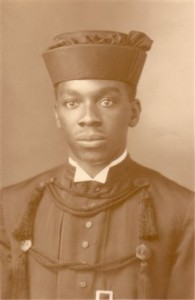
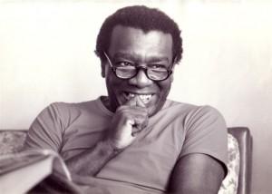

Milton Santos
Geógrafo, intelectual, professor e um dos maiores pensadores brasileiros.
Biografia:
1948-1964
Até 1964, ano em que deixa o Brasil em razão do golpe militar, ele conduz paralelamente uma carreira acadêmica e atividades públicas. Jornalista e redator do jornal A Tarde (1954-1964), professor de geografia humana na Universidade Católica de Salvador (1956-1960), professor catedrático de geografia humana na Universidade Federal da Bahia onde cria o Laboratório de Geociências, será diretor da Imprensa Oficial da Bahia (1959-1961), presidente da Fundação Comissão de Planejamento Econômico do Estado da Bahia (1962-1964), e representante da Casa Civil do presidente Janio Quadros na Bahia, em 1961. Suas pesquisas e publicações da época focalizam as realidades locais, principalmente a capital – a tese de doutorado é intitulada O Centro da Cidade de Salvador – assim como as cidades e a região do Recôncavo.
1964-1977
Em 1964, começa uma carreira internacional imposta pela situação política no Brasil. Primeiro na França, professor convidado nas universidades de Toulouse, Bordeaux e Paris-Sorbonne, e no IEDES (Instituto de Estudos do Desenvolvimento Econômico e Social). De 1971 a 1977, inicia uma carreira verdadeiramente itinerante, ao sabor dos convites: no MIT (Massachusetts Institute of Technology – Boston) como pesquisador; e como professor convidado nas universidades de Toronto (Canadá), Caracas (Venezuela), Dar-es-Salam (Tanzânia), Columbia University (New York). Esse período abre uma longa caminhada em direção a teorização em geografia, com o intenso aproveitamento das ricas bibliotecas das grandes universidades. Primeiro uma ampliação do foco com o livro Les Villes Du Tiers Monde, 1971, onde já aparece o interesse em estudar as peculiaridades da economia urbana dos países então chamados subdesenvolvidos, caracterizada pelos seus dois circuitos, superior e inferior, e resultando no livro L’Espace Partagé: les deux circuits de l’économie des pays sous-développés publicado em francês em 1975, em inglês e português em 1979.
1977-2001
Em 1977, retorna ao Brasil. Passam-se dois anos antes de conseguir voltar a ensinar na universidade brasileira, primeiro na Universidade Federal do Rio de Janeiro, de 1979 a 1983, ano em que ingressa por concurso na Universidade de São Paulo, professor titular de geografia humana até a aposentadoria compulsória, recebendo o título de Professor Emérito da USP em 1997 e continuando a pesquisar, publicar e orientar estudantes até o final de sua vida.Será reintegrado oficialmente à Universidade Federal da Bahia em 1995, da qual tinha sido demitido por “ausência”. Doze universidades brasileiras e sete universidades estrangeiras lhe outorgaram o titulo de Doutor Honoris Causa.
Em 1994, recebe o Prêmio Internacional de Geografia Vautrin Lud. Nesta última fase de seu percurso, publica Por uma Geografia Nova, da crítica da geografia a uma geografia crítica (1978), contribuição à efervescência e ânsia de renovação dessa ciência no Brasil . O espaço é definido como uma instancia social ativa, a noção de formação sócio-espacial introduzida. As pesquisas, as aulas e as publicações resultantes tencionam um esforço epistemológico para dotar a geografia latino-americana de categorias de análise apropriadas.
O estudo do meio técnico-científico-informacional deve permitir entender a organização do espaço no período histórico atual. Técnica, espaço, tempo: globalização e meio técnico-científico informacional (1994), Da totalidade ao lugar (1996), Metamorfose do espaço habitado (1997), são algumas dessas publicações que desembocam na sua obra maior (no seu livro maior?): A Natureza do Espaço (1996), que quer ser “uma teoria geral do espaço humano, uma contribuição da geografia `reconstrução da teoria social”. Enfim, em 2000, publica Por uma outra globalização, do pensamento único à consciência universal.
